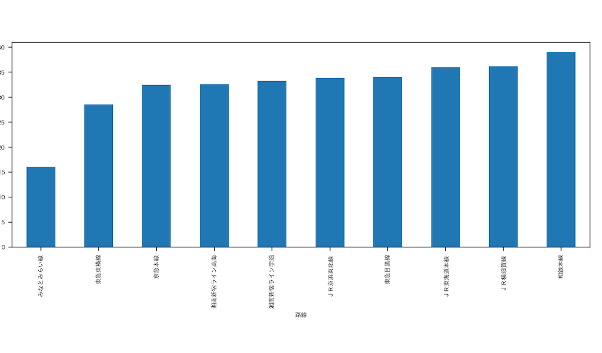
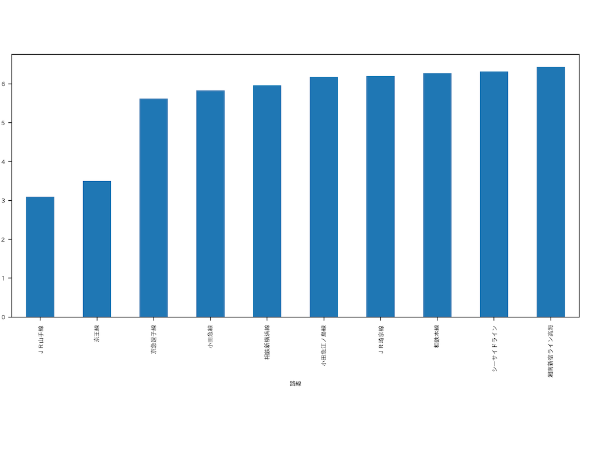
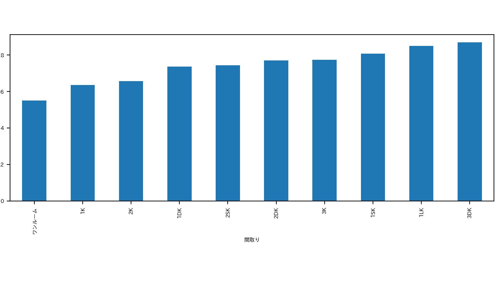
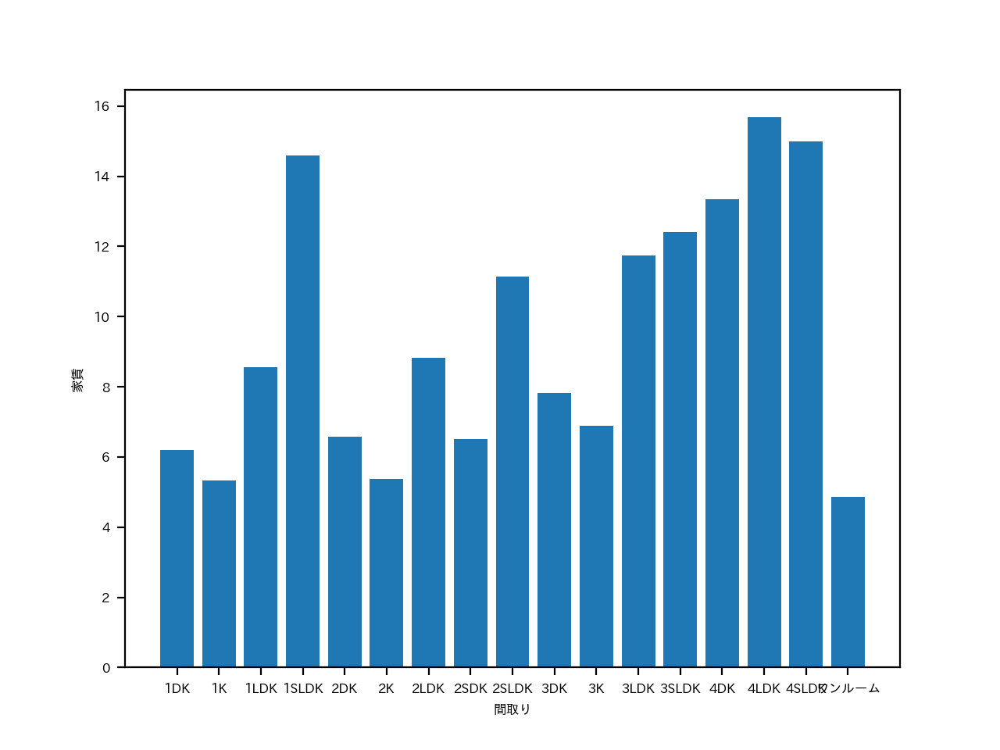

データサイエンス（改訂版）
グループで作成したもの
パワーポイント
第７回のを横浜駅以外で再度調べた。
おすすめのエリアについて
私は家賃と合計時間からおすすめのエリアについて調べようと考えた。


合計時間 家賃
この二つの画像から湘南新宿ライン高崎線が家賃が低く合計時間が少ないことが読み取れた。
湘南新宿ライン 路線図
次に湘南新宿ラインでの駅ごとに比較をしてみた。
合計時間 家賃
このグラフから家賃が一番低い駅が戸塚駅で合計時間が一番低い駅は横浜駅だった。
ここから私は戸塚駅に注目して考えようと思う。
そこで間取りについて調べてみようと考えた。


戸塚駅 全体
戸塚駅と全体での間取りについて調べてみたところ戸塚駅周辺の家賃は平均と比べて少し高いことがわかる。
しかし、全体との差はあまり大きくないので私は戸塚駅がおすすめエリアであると考えた。
また戸塚駅について調べたところこのエリアの中では比較的治安が良く、
駅周辺の開発も近年進んできており女性の方でも暮らしやすいエリアとなっていた。
おすすめエリア
戸塚駅
ソースコード
- import pandas as pd # データ分析に用いるライブラリ
- import matplotlib.pyplot as plt # グラフ表示に用いるライブラリ
- pd.set_option('display.unicode.east_asian_width', True) # 表示のずれを少し緩和
- plt.rcParams['font.family'] = 'IPAexGothic' # グラフ表示におけるフォントの指定
- plt.rcParams['font.size'] = 6 # グラフ表示におけるフォントの指定
- data_path = "./data.csv"
- df_data = pd.read_csv(data_path, encoding="utf-8-sig")
- #
- df_data.loc[:, "路線"].hist()
- plt.xlabel("路線") # 横軸のラベル
- plt.ylabel("家賃") # 縦軸のラベル
- plt.title("路線のヒストグラム") # グラフのタイトル
- plt.show()
- df_data.groupby("路線").mean().loc[:,"家賃"].sort_values()[:10].plot.bar(figsize = (10,8))
- plt.subplots_adjust(left=0.02,right=0.98,bottom=0.3)
- print(df_data.groupby("路線").mean().loc[:,"家賃"].sort_values()[:10])
- df_data.groupby("路線").mean().loc[:,"家賃"].sort_values()[:10].plot.bar(figsize = (10, 8))
- plt.subplots_adjust(left=0.02,right=0.98,bottom=0.3)
- plt.show()
- # 路線と家賃の平均のグラフ
- print(df_data.groupby("路線").mean().loc[:,"合計時間"].sort_values()[:10])
- df_data.groupby("路線").mean().loc[:,"合計時間"].sort_values()[:10].plot.bar(figsize = (10, 8))
- plt.subplots_adjust(left=0.02,right=0.98,bottom=0.3)
- plt.show()
- # 路線と合計時間の平均のグラフ
- mask = (df_data["路線"] == "湘南新宿ライン高海")
- df_mean = df_data[mask].groupby("駅").mean()
- x = df_mean.index
- y = df_mean.loc[:, "家賃"]
- plt.bar(x, y)
- plt.xlabel("駅")
- plt.ylabel("家賃")
- plt.show()
- # 高崎線の駅ごとの家賃の平均
- df_mean = df_data[mask].groupby("駅").mean()
- x = df_mean.index
- y = df_mean.loc[:, "合計時間"]
- plt.bar(x, y)
- plt.xlabel("駅")
- plt.ylabel("合計時間")
- plt.show()
- # 高崎線の駅ごとの合計時間の平均
- print(df_data.groupby("間取り").mean().loc[:,"家賃"].sort_values()[:10])
- df_data.groupby("間取り").mean().loc[:,"家賃"].sort_values()[:10].plot.bar(figsize = (10, 8))
- plt.subplots_adjust(left=0.02,right=0.98,bottom=0.3)
- plt.show()
- # 間取りごとの家賃の平均
- mask = (df_data["駅"] == "戸塚駅")
- df_mean = df_data[mask].groupby("間取り").mean()
- x = df_mean.index
- y = df_mean.loc[:, "家賃"]
- plt.bar(x, y)
- plt.xlabel("間取り")
- plt.ylabel("家賃")
- plt.show()
- # 戸塚駅の間取りの家賃の平均